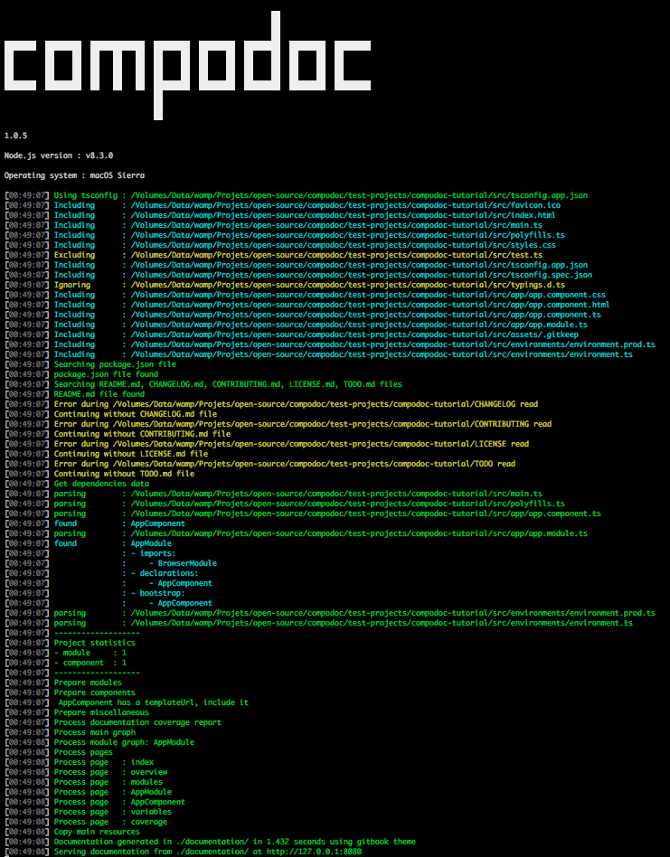
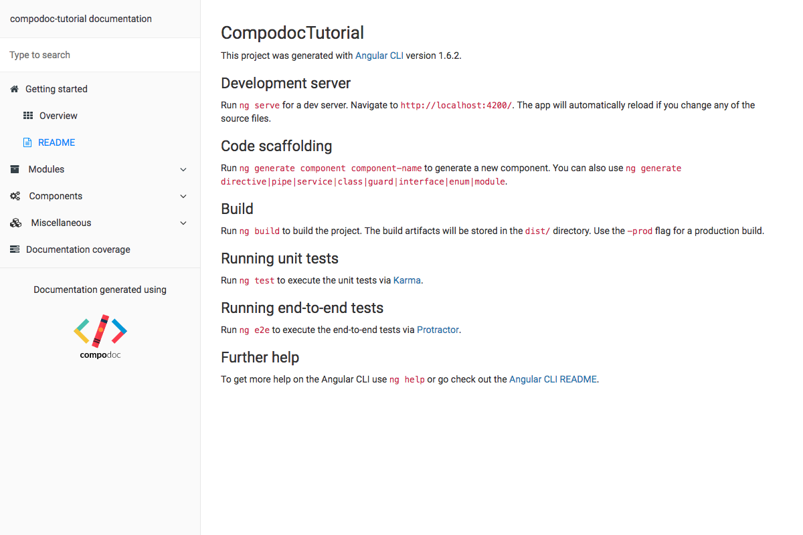

This is a simple tutorial explaining how you can document your Angular application easily with Compodoc.
We will start with a blank Angular CLI project.
ng new compodoc-tutorial
npm i --save-dev @compodoc/compodoc
Add npm scripts inside package.json file for generating the documentation : on for generation, one for serving it, and another combining them :
...
"ng": "ng",
"doc:build": "compodoc -p src/tsconfig.app.json",
"doc:serve": "compodoc -s",
"doc:buildandserve": "compodoc -p src/tsconfig.app.json -s",
"start": "ng serve",
...
npm run doc:buildandserve
You should see theses logs in your terminal.

and this in your browser opening http://localhost:8080
